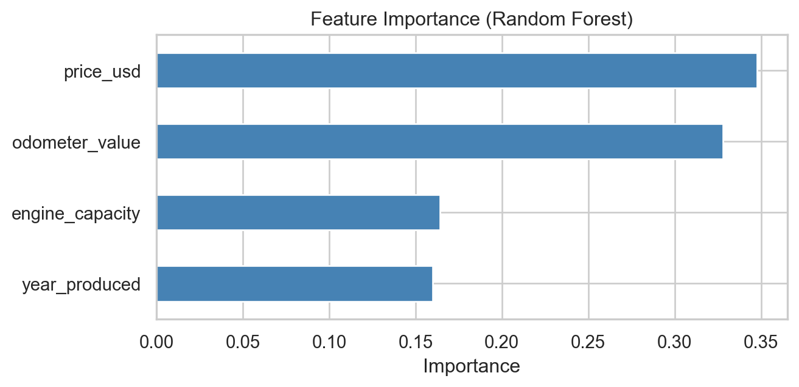

Multiclass classification predicts which of several categories an item belongs to. Here the target has five possible values: can we guess a car’s body type, whether sedan, SUV, hatchback, minivan, or universal, from its numeric attributes like price, year, mileage, and engine capacity? This is a genuinely hard problem, since many body types overlap heavily in price and size, so it is a realistic test of how much signal these numbers really carry.
We use a random forest classifier, which naturally handles multiple classes.
Preparing the Data
We keep the five most common body types, drop missing values, and split 80/20 with stratification so each body type appears in the same proportion in the training and test sets.
Accuracy lands around 0.50. That may sound low, but with five classes and heavy overlap it is meaningfully better than the naive baseline of always guessing sedan. The confusion matrix shows where the model succeeds and struggles.
The per-class report reveals that distinctive body types like minivans, with their large size, are recognized more reliably, while sedans and universals, which overlap in price and dimensions, are frequently confused for one another.
Which Features Matter Most?

Takeaway
Predicting body type from price, year, mileage, and engine size is only partly possible, at about 50% accuracy across five overlapping classes. The honest conclusion is that these numeric features carry real but limited signal: body types with distinctive size or price stand out, while similar ones blur together. A richer feature set with drivetrain, dimensions, and seat count would be needed to do much better. This page demonstrates the multiclass workflow end to end: stratified splitting, class balancing, and reading a confusion matrix and per-class precision and recall.
Source Code
---title: "Predicting Body Type with Multiclass Classification"execute: echo: false warning: falseformat: html: theme: flatly code-fold: true code-tools: true---```{python}import warnings; warnings.filterwarnings("ignore")import numpy as npimport pandas as pdimport matplotlib.pyplot as pltimport seaborn as snsfrom sklearn.model_selection import train_test_splitfrom sklearn.ensemble import RandomForestClassifierfrom sklearn.metrics import (accuracy_score, confusion_matrix, ConfusionMatrixDisplay, classification_report)sns.set_theme(style="whitegrid")cars = pd.read_csv("C:/Users/Alex/Documents/GitHub/Portfolio/AB_TESTS/cars.csv")```## BackgroundMulticlass classification predicts which of several categories an item belongs to. Here the target has five possible values: can we guess a car's body type, whether sedan, SUV, hatchback, minivan, or universal, from its numeric attributes like price, year, mileage, and engine capacity? This is a genuinely hard problem, since many body types overlap heavily in price and size, so it is a realistic test of how much signal these numbers really carry.We use a random forest classifier, which naturally handles multiple classes.## Preparing the DataWe keep the five most common body types, drop missing values, and split 80/20 with stratification so each body type appears in the same proportion in the training and test sets.```{python}#| echo: truetop = ["sedan", "suv", "hatchback", "minivan", "universal"]features = ["year_produced", "odometer_value", "engine_capacity", "price_usd"]df = cars[cars["body_type"].isin(top)].dropna(subset=features)df = df[df["price_usd"] <50000]X, y = df[features], df["body_type"]X_train, X_test, y_train, y_test = train_test_split( X, y, test_size=0.2, random_state=42, stratify=y)print(y.value_counts())```The classes are imbalanced, with sedans dominating, so we set class balancing to stop the model from simply always guessing the majority class.```{python}#| echo: trueclf = RandomForestClassifier(n_estimators=200, random_state=42, n_jobs=1, class_weight="balanced")clf.fit(X_train, y_train)pred = clf.predict(X_test)print(f"Test accuracy: {accuracy_score(y_test, pred):.3f}")```## EvaluationAccuracy lands around 0.50. That may sound low, but with five classes and heavy overlap it is meaningfully better than the naive baseline of always guessing sedan. The confusion matrix shows where the model succeeds and struggles.```{python}#| fig-align: centerfig, ax = plt.subplots(figsize=(6.5, 5.5))ConfusionMatrixDisplay.from_predictions( y_test, pred, ax=ax, cmap="Blues", colorbar=False, xticks_rotation=45)ax.set_title("Confusion Matrix for Body Type")plt.tight_layout(); plt.show()``````{python}print(classification_report(y_test, pred))```The per-class report reveals that distinctive body types like minivans, with their large size, are recognized more reliably, while sedans and universals, which overlap in price and dimensions, are frequently confused for one another.## Which Features Matter Most?```{python}#| fig-align: centerimp = pd.Series(clf.feature_importances_, index=features).sort_values()fig, ax = plt.subplots(figsize=(7, 3.5))imp.plot(kind="barh", color="steelblue", ax=ax)ax.set_title("Feature Importance (Random Forest)")ax.set_xlabel("Importance")plt.tight_layout(); plt.show()```## TakeawayPredicting body type from price, year, mileage, and engine size is only partly possible, at about 50% accuracy across five overlapping classes. The honest conclusion is that these numeric features carry real but limited signal: body types with distinctive size or price stand out, while similar ones blur together. A richer feature set with drivetrain, dimensions, and seat count would be needed to do much better. This page demonstrates the multiclass workflow end to end: stratified splitting, class balancing, and reading a confusion matrix and per-class precision and recall.